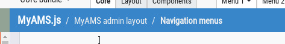

A breacrumbs ribbon is displayed at the top of the page to display current location:

First parts of these breadcrumbs are fixed; last ones are updated by MyAMS according to the currently selected navigation menu.
There is no custom configuration, only static elements needs to be included into HTML page:
<div id="ribbon"> <ol class="breadcrumb d-flex flex-nowrap" aria-label="breadcrumb"> <li class="breadcrumb-item parent strong"> <a href="index.html">MyAMS.js</a> </li> </ol> </div>